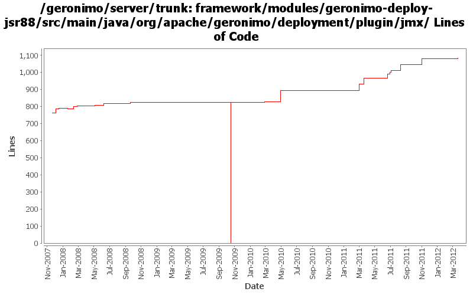

[root]/framework/modules/geronimo-deploy-jsr88/src/main/java/org/apache/geronimo/deployment/plugin/jmx

| Author | Changes | Lines of Code | Lines per Change |
|---|---|---|---|
| Totals | 50 (100.0%) | 1454 (100.0%) | 29.0 |
| djencks | 15 (30.0%) | 902 (62.0%) | 60.1 |
| gawor | 11 (22.0%) | 384 (26.4%) | 34.9 |
| rwonly | 11 (22.0%) | 144 (9.9%) | 13.0 |
| xuhaihong | 2 (4.0%) | 14 (1.0%) | 7.0 |
| jdillon | 4 (8.0%) | 4 (0.3%) | 1.0 |
| genspring | 1 (2.0%) | 3 (0.2%) | 3.0 |
| linsun | 1 (2.0%) | 2 (0.1%) | 2.0 |
| vamsic007 | 3 (6.0%) | 1 (0.1%) | 0.3 |
| gdamour | 2 (4.0%) | 0 (0.0%) | 0.0 |
GERONIMODEVTOOLS-790: Manage server application start - load but don't start certain modules
7 lines of code changed in 1 file:
GERONIMO-6209: Class hot swap for OSGi applications
41 lines of code changed in 2 files:
GERONIMODEVTOOLS-765: Expose a method for getting a state of a single module
35 lines of code changed in 1 file:
GERONIMO-6046 Add getBundleId API to geronimo-bundle-recorder so that GEP don't need use the SLOW listBundles method of OSGi JMX API
10 lines of code changed in 1 file:
GERONIMO-5764 record the bundles in startup.properties and add "deploy uninstall-bundle" cli
14 lines of code changed in 2 files:
GERONIMO-5764 Support Bundles Deployment
29 lines of code changed in 2 files:
GERONIMO-5861 changes based on Jarek's comments, thanks
2 lines of code changed in 1 file:
update package name due to the aries plugin refactor
1 lines of code changed in 1 file:
GERONIMO-5861 Update a bundle within an EBA
47 lines of code changed in 2 files:
GERONIMO-5838 Support EBA module type in DeploymentManager.getAvailableModules(ModuleType, Target[])
41 lines of code changed in 2 files:
GERONIMO-5579 a. Wrap the default rmi urlContextFactory b. Enable multiple RemoteDeploymentManager in the same vm of the server runtime
14 lines of code changed in 2 files:
GERONIMO-5213: More improvments for Geronimo Karaf shell commands. Refactored RemoteDeploymentManager so that the same set of operations can be invoked remote or locally.
281 lines of code changed in 3 files:
https://issues.apache.org/jira/browse/GERONIMO-3003, port #896316 from 22 branch to trunk.
3 lines of code changed in 1 file:
GERONIMO-4916 step 2 move sandbox osgi framework into trunk
824 lines of code changed in 3 files:
GERONIMO-4916 step 1 remove old framwork
0 lines of code changed in 3 files:
GERONIMO-4318 try to indicate when plugins have been installed in the current server, irrespective of whether they are in the repos
2 lines of code changed in 1 file:
GERONIMO-4318 revert change that breaks plugin farming and running multiple servers off of one repository
1 lines of code changed in 1 file:
GERONIMO-4318 - All the plugins are marked as installable on the install plugins portlet
2 lines of code changed in 1 file:
GERONIMO-4239 Reaarrange some jsr88 related classes to fix a nasty classcast exception in the offline deployer. Move some farming classes around to eliminate an inessential dependency on deployment code
6 lines of code changed in 1 file:
GERONIMO-4304 Register allowable plugin repositories, with credentials as appropriate
2 lines of code changed in 1 file:
GERONIMO-4284 fix the jpa stuff, recover better from multicast problems, add a gshell command, restructure slightly how non-jsr88 stuff is obtained in gshell
13 lines of code changed in 1 file:
fixed some formatting issues in javadocs and added checkOnInstall(Object, boolean) method to PluginInstaller interface
9 lines of code changed in 1 file:
More loggers back to statics
1 lines of code changed in 1 file:
pass the right filename when doing remote deployment or remote library installation (GERONIMO-3999)
6 lines of code changed in 1 file:
(GERONIMO-3985) Use SLF4J as the primary logging facade for Geronimo
3 lines of code changed in 3 files:
reuse connection established by deploy/connect for geronimo/stop-server (plus a few other minor fixes) (GERONIMO-3869)
4 lines of code changed in 1 file:
GERONIMO-3841 apply batches of config.xml updates from car-maven-plugin
11 lines of code changed in 1 file:
missed one change for GERONIMO-3583
1 lines of code changed in 1 file:
GERONIMO-3607 Console pages to export a server.
2 lines of code changed in 1 file:
GERONIMO-3607 Large cleanup of code for extracting assemblies from running servers. Should greatly improve dealing with snapshots in local maven repos. Also changes meaning of plugin dependency start flag to override plugin load flag.
2 lines of code changed in 1 file:
GERONIMO-3607 Add 'assemble a server' support to geronimo and use it from car-maven-plugin and gshell. Not yet available in the console. Better repository support would be desirable
39 lines of code changed in 1 file:
GERONIMO-3611 Deployer should provide an "install-library" option to upload jars to repository
o Deployer util now supports an "install-library" option.
o Added an installLibrary method to PluginInstaller.
o Thanks to David Jencks for his suggestion.
1 lines of code changed in 3 files:
When distributing w/o the explicit selection of a target, we only distribute
to the first target returned by DeploymentManager. This first target is
the default target, or configuration store, and users can specify an abstract
name query (in EditableKernelConfigurationManager) to identify this default
target.
Now that multiple configuration stores per server are better handled
out-of-the-box, we can re-enable the "clustered" configuration stores.
Also, let's more the rmock dependency to testsupport-common so that we
can use it from all our tests.
This fixes GERONIMO-3612 - When no target configuration store is explicitly
specified while installing a configuration, the configuration should be
installed to a default configuration store
0 lines of code changed in 2 files: